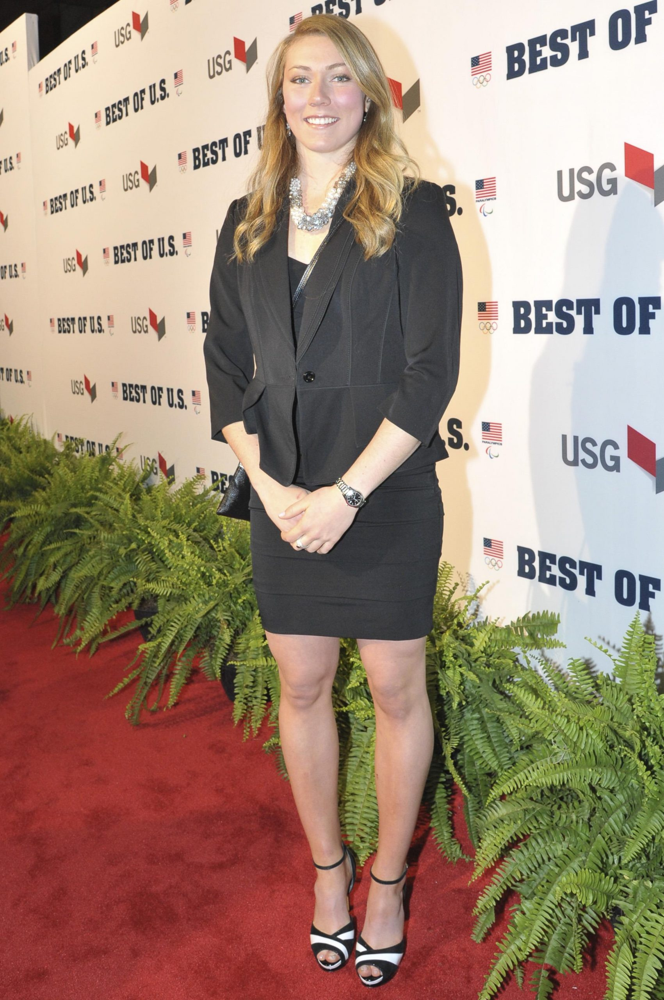

Sobhi Sport - Running Outdoor Trail Fitness Yoga Triathlon & Co.
 Skip to content E-Shop / Click & Collect Sobhi Sport Rennes Centre Sobhi Sport Chartres Sobhi Sport Rennes La Courrouze Sobhi Sport Nantes Commande sur mesure Nos univers Notre histoire L’expérience Sobhi Sport Sobhi Sport Running Sobhi Sport Aventure Sobhi Running Club Nos Marques Nos magasins Actualités Menu FermerRunning
Trail
Triathlon
Fitness
Randonnée
Choisissez le meilleur pour votre activité
DES BOUTIQUES SPÉCIALISÉES DANS LA COURSE À PIED
DÉCOUVRIR L'UNIVERSNOUS VOUS ACCOMPAGNONS DANS VOS AVENTURES
DÉCOUVRIR L'UNIVERSVivre l'expérience Sobhi Sport
Des magasins spécialisés
Nous sommes à même de vous apporter les meilleurs conseils et produits dans les domaines du running, du trail, du fitness, de la randonnée, du trekking ou encore de l'escalade. Chaque activité est pour nous unique. Nous accordons une importance indépendante et différenciée pour toutes les pratiques.
Un conseil personnalisé
Sobhi Sport est aujourd'hui spécialisé dans différents domaines d'activités. Des conseillers sont à votre disposition en magasin pour vous offrir un conseil personnalisé et adapté en fonction de votre profil. Le but étant de vous garantir le service le plus adapté et efficace en fonction de votre besoin.
Les actualités Sobhi Sport
Conseils / Entrainements / RunningLes 10 bienfaits du running :
Aujourd'hui nous sommes environ 12 millions de coureurs en France. Les bienfaits du running ne sont plus à montrer sur…
Lire la suite Conseils / Entrainements / RunningGARDER LA MOTIVATION POUR COURIR SANS COURSE
Pour un grand nombre de coureur, la course à pied est un sport qui demande beaucoup de motivation. En effet…
Lire la suite Conseils / Fitness / Running / YogaLe yoga, effet de mode ou réelle pratique ?
Le yoga est une pratique exercée depuis plusieurs siècles, originaire d’Inde. Son activité vise à la concentration, à l’évacuation du…
Lire la suite Conseils / RunningCourir en été : les règles d’or
La saison estivale est là, ainsi que les grandes chaleurs et le beau temps. Il est important de se préparer…
Lire la suiteContactez-nous et découvrez les magasins